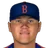

Franchise record book · MLB
Brooklyn Gothams
Seasons covered: 2002–2002. Only games played for this franchise count.
This club has no pre-2002 history in the export, so its record book is the 2002 season to date. Rate records need 3.1 PA or 1 inning per team game.
Home runs
| # | Player | Season | Team | Home runs |
|---|---|---|---|---|
| #1 | 2002 (MLB) |  Brooklyn Gothams Brooklyn Gothams | 8 | |
| #2 | 2002 (MLB) | Brooklyn Gothams | 7 | |
| #3 | 2002 (MLB) | Brooklyn Gothams | 6 | |
| #4 | 2002 (MLB) | Brooklyn Gothams | 5 | |
| #5 | Fernando Tatis • | 2002 (MLB) | Brooklyn Gothams | 5 |
| #6 | 2002 (MLB) | Brooklyn Gothams | 4 | |
| #7 | 2002 (MLB) | Brooklyn Gothams | 4 | |
| #8 | 2002 (MLB) | Brooklyn Gothams | 3 | |
| #9 | 2002 (MLB) | Brooklyn Gothams | 2 | |
| #10 | Koyie Hill • | 2002 (MLB) | Brooklyn Gothams | 2 |
Hits
| # | Player | Season | Team | Hits |
|---|---|---|---|---|
| #1 | 2002 (MLB) | Brooklyn Gothams | 54 | |
| #2 | 2002 (MLB) | Brooklyn Gothams | 41 | |
| #3 | 2002 (MLB) | Brooklyn Gothams | 40 | |
| #4 | 2002 (MLB) | Brooklyn Gothams | 40 | |
| #5 | Fernando Tatis • | 2002 (MLB) | Brooklyn Gothams | 37 |
| #6 | 2002 (MLB) | Brooklyn Gothams | 36 | |
| #7 | 2002 (MLB) | Brooklyn Gothams | 34 | |
| #8 | 2002 (MLB) | Brooklyn Gothams | 30 | |
| #9 | 2002 (MLB) | Brooklyn Gothams | 22 | |
| #10 | Craig Wilson • | 2002 (MLB) | Brooklyn Gothams | 16 |
RBI
| # | Player | Season | Team | RBI |
|---|---|---|---|---|
| #1 | 2002 (MLB) | Brooklyn Gothams | 23 | |
| #2 | 2002 (MLB) | Brooklyn Gothams | 22 | |
| #3 | 2002 (MLB) | Brooklyn Gothams | 19 | |
| #4 | 2002 (MLB) | Brooklyn Gothams | 19 | |
| #5 | 2002 (MLB) | Brooklyn Gothams | 19 | |
| #6 | Fernando Tatis • | 2002 (MLB) | Brooklyn Gothams | 18 |
| #7 | 2002 (MLB) | Brooklyn Gothams | 17 | |
| #8 | 2002 (MLB) | Brooklyn Gothams | 12 | |
| #9 | 2002 (MLB) | Brooklyn Gothams | 11 | |
| #10 | Craig Wilson • | 2002 (MLB) | Brooklyn Gothams | 6 |
Runs
| # | Player | Season | Team | Runs |
|---|---|---|---|---|
| #1 | 2002 (MLB) | Brooklyn Gothams | 30 | |
| #2 | 2002 (MLB) | Brooklyn Gothams | 28 | |
| #3 | Fernando Tatis • | 2002 (MLB) | Brooklyn Gothams | 24 |
| #4 | 2002 (MLB) | Brooklyn Gothams | 19 | |
| #5 | 2002 (MLB) | Brooklyn Gothams | 18 | |
| #6 | 2002 (MLB) | Brooklyn Gothams | 18 | |
| #7 | 2002 (MLB) | Brooklyn Gothams | 17 | |
| #8 | 2002 (MLB) | Brooklyn Gothams | 15 | |
| #9 | 2002 (MLB) | Brooklyn Gothams | 13 | |
| #10 | Koyie Hill • | 2002 (MLB) | Brooklyn Gothams | 4 |
Stolen bases
| # | Player | Season | Team | Stolen bases |
|---|---|---|---|---|
| #1 | 2002 (MLB) | Brooklyn Gothams | 6 | |
| #2 | 2002 (MLB) | Brooklyn Gothams | 4 | |
| #3 | 2002 (MLB) | Brooklyn Gothams | 3 | |
| #4 | 2002 (MLB) | Brooklyn Gothams | 3 | |
| #5 | 2002 (MLB) | Brooklyn Gothams | 2 | |
| #6 | 2002 (MLB) | Brooklyn Gothams | 2 | |
| #7 | Fernando Tatis • | 2002 (MLB) | Brooklyn Gothams | 2 |
| #8 | Julio Ramirez • | 2002 (MLB) | Brooklyn Gothams | 1 |
| #9 | Craig Wilson • | 2002 (MLB) | Brooklyn Gothams | 1 |
| #10 | 2002 (MLB) | Brooklyn Gothams | 0 |
Doubles
| # | Player | Season | Team | Doubles |
|---|---|---|---|---|
| #1 | 2002 (MLB) | Brooklyn Gothams | 12 | |
| #2 | 2002 (MLB) | Brooklyn Gothams | 11 | |
| #3 | 2002 (MLB) | Brooklyn Gothams | 11 | |
| #4 | 2002 (MLB) | Brooklyn Gothams | 10 | |
| #5 | Fernando Tatis • | 2002 (MLB) | Brooklyn Gothams | 8 |
| #6 | 2002 (MLB) | Brooklyn Gothams | 7 | |
| #7 | 2002 (MLB) | Brooklyn Gothams | 6 | |
| #8 | 2002 (MLB) | Brooklyn Gothams | 5 | |
| #9 | 2002 (MLB) | Brooklyn Gothams | 5 | |
| #10 | Julio Ramirez • | 2002 (MLB) | Brooklyn Gothams | 2 |
Triples
| # | Player | Season | Team | Triples |
|---|---|---|---|---|
| #1 | 2002 (MLB) | Brooklyn Gothams | 1 | |
| #2 | 2002 (MLB) | Brooklyn Gothams | 1 | |
| #3 | Fernando Tatis • | 2002 (MLB) | Brooklyn Gothams | 1 |
| #4 | Jay Canizaro • | 2002 (MLB) | Brooklyn Gothams | 1 |
| #5 | Koyie Hill • | 2002 (MLB) | Brooklyn Gothams | 1 |
| #6 | 2002 (MLB) | Brooklyn Gothams | 0 | |
| #7 | 2002 (MLB) | Brooklyn Gothams | 0 | |
| #8 | 2002 (MLB) | Brooklyn Gothams | 0 | |
| #9 | 2002 (MLB) | Brooklyn Gothams | 0 | |
| #10 | 2002 (MLB) | Brooklyn Gothams | 0 |
Walks
| # | Player | Season | Team | Walks |
|---|---|---|---|---|
| #1 | 2002 (MLB) | Brooklyn Gothams | 20 | |
| #2 | Fernando Tatis • | 2002 (MLB) | Brooklyn Gothams | 18 |
| #3 | 2002 (MLB) | Brooklyn Gothams | 17 | |
| #4 | 2002 (MLB) | Brooklyn Gothams | 14 | |
| #5 | 2002 (MLB) | Brooklyn Gothams | 14 | |
| #6 | 2002 (MLB) | Brooklyn Gothams | 13 | |
| #7 | 2002 (MLB) | Brooklyn Gothams | 9 | |
| #8 | 2002 (MLB) | Brooklyn Gothams | 9 | |
| #9 | 2002 (MLB) | Brooklyn Gothams | 6 | |
| #10 | Craig Wilson • | 2002 (MLB) | Brooklyn Gothams | 3 |
Total bases
| # | Player | Season | Team | Total bases |
|---|---|---|---|---|
| #1 | 2002 (MLB) | Brooklyn Gothams | 83 | |
| #2 | 2002 (MLB) | Brooklyn Gothams | 75 | |
| #3 | 2002 (MLB) | Brooklyn Gothams | 70 | |
| #4 | 2002 (MLB) | Brooklyn Gothams | 65 | |
| #5 | Fernando Tatis • | 2002 (MLB) | Brooklyn Gothams | 62 |
| #6 | 2002 (MLB) | Brooklyn Gothams | 57 | |
| #7 | 2002 (MLB) | Brooklyn Gothams | 55 | |
| #8 | 2002 (MLB) | Brooklyn Gothams | 46 | |
| #9 | 2002 (MLB) | Brooklyn Gothams | 34 | |
| #10 | Craig Wilson • | 2002 (MLB) | Brooklyn Gothams | 20 |
Batting average qualified
| # | Player | Season | Team | Batting average |
|---|---|---|---|---|
| #1 | 2002 (MLB) | Brooklyn Gothams | .298 | |
| #2 | 2002 (MLB) | Brooklyn Gothams | .278 | |
| #3 | Fernando Tatis • | 2002 (MLB) | Brooklyn Gothams | .272 |
| #4 | 2002 (MLB) | Brooklyn Gothams | .269 | |
| #5 | 2002 (MLB) | Brooklyn Gothams | .261 | |
| #6 | 2002 (MLB) | Brooklyn Gothams | .260 | |
| #7 | 2002 (MLB) | Brooklyn Gothams | .236 | |
| #8 | 2002 (MLB) | Brooklyn Gothams | .213 |
On-base % qualified
| # | Player | Season | Team | On-base % |
|---|---|---|---|---|
| #1 | Fernando Tatis • | 2002 (MLB) | Brooklyn Gothams | .361 |
| #2 | 2002 (MLB) | Brooklyn Gothams | .350 | |
| #3 | 2002 (MLB) | Brooklyn Gothams | .344 | |
| #4 | 2002 (MLB) | Brooklyn Gothams | .321 | |
| #5 | 2002 (MLB) | Brooklyn Gothams | .318 | |
| #6 | 2002 (MLB) | Brooklyn Gothams | .313 | |
| #7 | 2002 (MLB) | Brooklyn Gothams | .301 | |
| #8 | 2002 (MLB) | Brooklyn Gothams | .291 |
Slugging % qualified
| # | Player | Season | Team | Slugging % |
|---|---|---|---|---|
| #1 | 2002 (MLB) | Brooklyn Gothams | .478 | |
| #2 | 2002 (MLB) | Brooklyn Gothams | .459 | |
| #3 | Fernando Tatis • | 2002 (MLB) | Brooklyn Gothams | .456 |
| #4 | 2002 (MLB) | Brooklyn Gothams | .455 | |
| #5 | 2002 (MLB) | Brooklyn Gothams | .451 | |
| #6 | 2002 (MLB) | Brooklyn Gothams | .410 | |
| #7 | 2002 (MLB) | Brooklyn Gothams | .396 | |
| #8 | 2002 (MLB) | Brooklyn Gothams | .326 |
OPS qualified
| # | Player | Season | Team | OPS |
|---|---|---|---|---|
| #1 | 2002 (MLB) | Brooklyn Gothams | .822 | |
| #2 | Fernando Tatis • | 2002 (MLB) | Brooklyn Gothams | .817 |
| #3 | 2002 (MLB) | Brooklyn Gothams | .809 | |
| #4 | 2002 (MLB) | Brooklyn Gothams | .776 | |
| #5 | 2002 (MLB) | Brooklyn Gothams | .770 | |
| #6 | 2002 (MLB) | Brooklyn Gothams | .712 | |
| #7 | 2002 (MLB) | Brooklyn Gothams | .709 | |
| #8 | 2002 (MLB) | Brooklyn Gothams | .617 |
WAR (OOTP)
| # | Player | Season | Team | WAR (OOTP) |
|---|---|---|---|---|
| #1 | 2002 (MLB) | Brooklyn Gothams | 1.2 | |
| #2 | Fernando Tatis • | 2002 (MLB) | Brooklyn Gothams | 1.1 |
| #3 | 2002 (MLB) | Brooklyn Gothams | 0.9 | |
| #4 | 2002 (MLB) | Brooklyn Gothams | 0.6 | |
| #5 | 2002 (MLB) | Brooklyn Gothams | 0.5 | |
| #6 | 2002 (MLB) | Brooklyn Gothams | 0.5 | |
| #7 | 2002 (MLB) | Brooklyn Gothams | 0.5 | |
| #8 | Koyie Hill • | 2002 (MLB) | Brooklyn Gothams | 0.3 |
| #9 | Julio Ramirez • | 2002 (MLB) | Brooklyn Gothams | 0.1 |
| #10 | 2002 (MLB) | Brooklyn Gothams | 0.1 |
Wins
| # | Player | Season | Team | Wins |
|---|---|---|---|---|
| #1 | 2002 (MLB) | Brooklyn Gothams | 5 | |
| #2 | 2002 (MLB) | Brooklyn Gothams | 4 | |
| #3 | 2002 (MLB) | Brooklyn Gothams | 4 | |
| #4 | 2002 (MLB) | Brooklyn Gothams | 2 | |
| #5 | 2002 (MLB) | Brooklyn Gothams | 2 | |
| #6 | Chris George • | 2002 (MLB) | Brooklyn Gothams | 2 |
| #7 | Grant Roberts • | 2002 (MLB) | Brooklyn Gothams | 1 |
| #8 | Wes Obermueller • | 2002 (MLB) | Brooklyn Gothams | 1 |
| #9 |  Jayson Durocher • | 2002 (MLB) | Brooklyn Gothams | 1 |
| #10 | Ken Pumphrey • | 2002 (MLB) | Brooklyn Gothams | 1 |
Strikeouts
| # | Player | Season | Team | Strikeouts |
|---|---|---|---|---|
| #1 | 2002 (MLB) | Brooklyn Gothams | 46 | |
| #2 | 2002 (MLB) | Brooklyn Gothams | 45 | |
| #3 | 2002 (MLB) | Brooklyn Gothams | 31 | |
| #4 | 2002 (MLB) | Brooklyn Gothams | 26 | |
| #5 | Grant Roberts • | 2002 (MLB) | Brooklyn Gothams | 18 |
| #6 | 2002 (MLB) | Brooklyn Gothams | 17 | |
| #7 | Jaime Cerda • | 2002 (MLB) | Brooklyn Gothams | 12 |
| #8 | Wes Obermueller • | 2002 (MLB) | Brooklyn Gothams | 12 |
| #9 | Chris George • | 2002 (MLB) | Brooklyn Gothams | 12 |
| #10 | 2002 (MLB) | Brooklyn Gothams | 9 |
Saves
| # | Player | Season | Team | Saves |
|---|---|---|---|---|
| #1 | 2002 (MLB) | Brooklyn Gothams | 9 | |
| #2 | Wes Obermueller • | 2002 (MLB) | Brooklyn Gothams | 3 |
| #3 | Chris George • | 2002 (MLB) | Brooklyn Gothams | 1 |
| #4 | 2002 (MLB) | Brooklyn Gothams | 0 | |
| #5 | 2002 (MLB) | Brooklyn Gothams | 0 | |
| #6 | 2002 (MLB) | Brooklyn Gothams | 0 | |
| #7 | 2002 (MLB) | Brooklyn Gothams | 0 | |
| #8 | 2002 (MLB) | Brooklyn Gothams | 0 | |
| #9 | Grant Roberts • | 2002 (MLB) | Brooklyn Gothams | 0 |
| #10 | Jaime Cerda • | 2002 (MLB) | Brooklyn Gothams | 0 |
Innings
| # | Player | Season | Team | Innings |
|---|---|---|---|---|
| #1 | 2002 (MLB) | Brooklyn Gothams | 62.0 | |
| #2 | 2002 (MLB) | Brooklyn Gothams | 57.0 | |
| #3 | 2002 (MLB) | Brooklyn Gothams | 47.0 | |
| #4 | 2002 (MLB) | Brooklyn Gothams | 44.0 | |
| #5 | Chris George • | 2002 (MLB) | Brooklyn Gothams | 25.0 |
| #6 | Grant Roberts • | 2002 (MLB) | Brooklyn Gothams | 23.1 |
| #7 | Wes Obermueller • | 2002 (MLB) | Brooklyn Gothams | 23.0 |
| #8 | 2002 (MLB) | Brooklyn Gothams | 22.1 | |
| #9 | Ken Pumphrey • | 2002 (MLB) | Brooklyn Gothams | 20.0 |
| #10 | 2002 (MLB) | Brooklyn Gothams | 18.0 |
Complete games
| # | Player | Season | Team | Complete games |
|---|---|---|---|---|
| #1 | 2002 (MLB) | Brooklyn Gothams | 0 | |
| #2 | 2002 (MLB) | Brooklyn Gothams | 0 | |
| #3 | 2002 (MLB) | Brooklyn Gothams | 0 | |
| #4 | 2002 (MLB) | Brooklyn Gothams | 0 | |
| #5 | 2002 (MLB) | Brooklyn Gothams | 0 | |
| #6 | 2002 (MLB) | Brooklyn Gothams | 0 | |
| #7 | Grant Roberts • | 2002 (MLB) | Brooklyn Gothams | 0 |
| #8 | Jaime Cerda • | 2002 (MLB) | Brooklyn Gothams | 0 |
| #9 | Wes Obermueller • | 2002 (MLB) | Brooklyn Gothams | 0 |
| #10 | Jayson Durocher • | 2002 (MLB) | Brooklyn Gothams | 0 |
Shutouts
| # | Player | Season | Team | Shutouts |
|---|---|---|---|---|
| #1 | 2002 (MLB) | Brooklyn Gothams | 0 | |
| #2 | 2002 (MLB) | Brooklyn Gothams | 0 | |
| #3 | 2002 (MLB) | Brooklyn Gothams | 0 | |
| #4 | 2002 (MLB) | Brooklyn Gothams | 0 | |
| #5 | 2002 (MLB) | Brooklyn Gothams | 0 | |
| #6 | 2002 (MLB) | Brooklyn Gothams | 0 | |
| #7 | Grant Roberts • | 2002 (MLB) | Brooklyn Gothams | 0 |
| #8 | Jaime Cerda • | 2002 (MLB) | Brooklyn Gothams | 0 |
| #9 | Wes Obermueller • | 2002 (MLB) | Brooklyn Gothams | 0 |
| #10 | Jayson Durocher • | 2002 (MLB) | Brooklyn Gothams | 0 |
ERA qualified
| # | Player | Season | Team | ERA |
|---|---|---|---|---|
| #1 | 2002 (MLB) | Brooklyn Gothams | 2.66 | |
| #2 | 2002 (MLB) | Brooklyn Gothams | 2.68 | |
| #3 | 2002 (MLB) | Brooklyn Gothams | 2.76 | |
| #4 | 2002 (MLB) | Brooklyn Gothams | 3.79 |
WHIP qualified
| # | Player | Season | Team | WHIP |
|---|---|---|---|---|
| #1 | 2002 (MLB) | Brooklyn Gothams | 1.07 | |
| #2 | 2002 (MLB) | Brooklyn Gothams | 1.10 | |
| #3 | 2002 (MLB) | Brooklyn Gothams | 1.14 | |
| #4 | 2002 (MLB) | Brooklyn Gothams | 1.38 |
K/9 qualified
| # | Player | Season | Team | K/9 |
|---|---|---|---|---|
| #1 | 2002 (MLB) | Brooklyn Gothams | 7.3 | |
| #2 | 2002 (MLB) | Brooklyn Gothams | 6.5 | |
| #3 | 2002 (MLB) | Brooklyn Gothams | 6.3 | |
| #4 | 2002 (MLB) | Brooklyn Gothams | 5.0 |
WAR (OOTP)
| # | Player | Season | Team | WAR (OOTP) |
|---|---|---|---|---|
| #1 | 2002 (MLB) | Brooklyn Gothams | 1.8 | |
| #2 | 2002 (MLB) | Brooklyn Gothams | 1.0 | |
| #3 | 2002 (MLB) | Brooklyn Gothams | 0.9 | |
| #4 | 2002 (MLB) | Brooklyn Gothams | 0.8 | |
| #5 | Grant Roberts • | 2002 (MLB) | Brooklyn Gothams | 0.5 |
| #6 | Chris George • | 2002 (MLB) | Brooklyn Gothams | 0.2 |
| #7 | 2002 (MLB) | Brooklyn Gothams | 0.2 | |
| #8 | 2002 (MLB) | Brooklyn Gothams | 0.1 | |
| #9 | Wes Obermueller • | 2002 (MLB) | Brooklyn Gothams | -0.1 |
| #10 | Ken Pumphrey • | 2002 (MLB) | Brooklyn Gothams | -0.4 |
Home runs
| # | Player | Years | Home runs |
|---|---|---|---|
| #1 | 1995–02 | 8 | |
| #2 | 1997–02 | 7 | |
| #3 | 1990–02 | 6 | |
| #4 | 2001–02 | 5 | |
| #5 | Fernando Tatis • | 1997–02 | 5 |
| #6 | 1999–02 | 4 | |
| #7 | 1998–02 | 4 | |
| #8 | 1996–02 | 3 | |
| #9 | 2001–02 | 2 | |
| #10 | Koyie Hill • | 2002–02 | 2 |
Hits
| # | Player | Years | Hits |
|---|---|---|---|
| #1 | 1995–02 | 54 | |
| #2 | 1997–02 | 41 | |
| #3 | 1990–02 | 40 | |
| #4 | 2001–02 | 40 | |
| #5 | Fernando Tatis • | 1997–02 | 37 |
| #6 | 1998–02 | 36 | |
| #7 | 1999–02 | 34 | |
| #8 | 1996–02 | 30 | |
| #9 | 2001–02 | 22 | |
| #10 | Craig Wilson • | 1998–02 | 16 |
RBI
| # | Player | Years | RBI |
|---|---|---|---|
| #1 | 1990–02 | 23 | |
| #2 | 1998–02 | 22 | |
| #3 | 2001–02 | 19 | |
| #4 | 1997–02 | 19 | |
| #5 | 1995–02 | 19 | |
| #6 | Fernando Tatis • | 1997–02 | 18 |
| #7 | 1999–02 | 17 | |
| #8 | 2001–02 | 12 | |
| #9 | 1996–02 | 11 | |
| #10 | Craig Wilson • | 1998–02 | 6 |
Runs
| # | Player | Years | Runs |
|---|---|---|---|
| #1 | 1997–02 | 30 | |
| #2 | 1995–02 | 28 | |
| #3 | Fernando Tatis • | 1997–02 | 24 |
| #4 | 1999–02 | 19 | |
| #5 | 1990–02 | 18 | |
| #6 | 2001–02 | 18 | |
| #7 | 1996–02 | 17 | |
| #8 | 1998–02 | 15 | |
| #9 | 2001–02 | 13 | |
| #10 | Koyie Hill • | 2002–02 | 4 |
Stolen bases
| # | Player | Years | Stolen bases |
|---|---|---|---|
| #1 | 1998–02 | 6 | |
| #2 | 1999–02 | 4 | |
| #3 | 2001–02 | 3 | |
| #4 | 1997–02 | 3 | |
| #5 | 1990–02 | 2 | |
| #6 | 1995–02 | 2 | |
| #7 | Fernando Tatis • | 1997–02 | 2 |
| #8 | Julio Ramirez • | 1999–02 | 1 |
| #9 | Craig Wilson • | 1998–02 | 1 |
| #10 | 1997–02 | 0 |
Doubles
| # | Player | Years | Doubles |
|---|---|---|---|
| #1 | 1990–02 | 12 | |
| #2 | 1999–02 | 11 | |
| #3 | 1997–02 | 11 | |
| #4 | 2001–02 | 10 | |
| #5 | Fernando Tatis • | 1997–02 | 8 |
| #6 | 1998–02 | 7 | |
| #7 | 2001–02 | 6 | |
| #8 | 1996–02 | 5 | |
| #9 | 1995–02 | 5 | |
| #10 | Julio Ramirez • | 1999–02 | 2 |
Triples
| # | Player | Years | Triples |
|---|---|---|---|
| #1 | 1996–02 | 1 | |
| #2 | 1997–02 | 1 | |
| #3 | Fernando Tatis • | 1997–02 | 1 |
| #4 | Jay Canizaro • | 1996–02 | 1 |
| #5 | Koyie Hill • | 2002–02 | 1 |
| #6 | 1997–02 | 0 | |
| #7 | 1990–02 | 0 | |
| #8 | 1999–02 | 0 | |
| #9 | 2001–02 | 0 | |
| #10 | 1998–02 | 0 |
Walks
| # | Player | Years | Walks |
|---|---|---|---|
| #1 | 1997–02 | 20 | |
| #2 | Fernando Tatis • | 1997–02 | 18 |
| #3 | 1999–02 | 17 | |
| #4 | 1990–02 | 14 | |
| #5 | 1996–02 | 14 | |
| #6 | 1995–02 | 13 | |
| #7 | 2001–02 | 9 | |
| #8 | 2001–02 | 9 | |
| #9 | 1998–02 | 6 | |
| #10 | Craig Wilson • | 1998–02 | 3 |
Total bases
| # | Player | Years | Total bases |
|---|---|---|---|
| #1 | 1995–02 | 83 | |
| #2 | 1997–02 | 75 | |
| #3 | 1990–02 | 70 | |
| #4 | 2001–02 | 65 | |
| #5 | Fernando Tatis • | 1997–02 | 62 |
| #6 | 1999–02 | 57 | |
| #7 | 1998–02 | 55 | |
| #8 | 1996–02 | 46 | |
| #9 | 2001–02 | 34 | |
| #10 | Craig Wilson • | 1998–02 | 20 |
Batting average min 2,000 PA
| # | Player | Years | Batting average |
|---|
On-base % min 2,000 PA
| # | Player | Years | On-base % |
|---|
Slugging % min 2,000 PA
| # | Player | Years | Slugging % |
|---|
OPS min 2,000 PA
| # | Player | Years | OPS |
|---|
WAR (OOTP)
| # | Player | Years | WAR (OOTP) |
|---|---|---|---|
| #1 | 2001–02 | 1.2 | |
| #2 | Fernando Tatis • | 1997–02 | 1.1 |
| #3 | 1998–02 | 0.9 | |
| #4 | 1997–02 | 0.6 | |
| #5 | 1995–02 | 0.5 | |
| #6 | 1999–02 | 0.5 | |
| #7 | 1990–02 | 0.5 | |
| #8 | Koyie Hill • | 2002–02 | 0.3 |
| #9 | Julio Ramirez • | 1999–02 | 0.1 |
| #10 | 1997–02 | 0.1 |
Wins
| # | Player | Years | Wins |
|---|---|---|---|
| #1 | 1999–02 | 5 | |
| #2 | 2002–02 | 4 | |
| #3 | 1997–02 | 4 | |
| #4 | 1996–02 | 2 | |
| #5 | 1995–02 | 2 | |
| #6 | Chris George • | 2001–02 | 2 |
| #7 | Grant Roberts • | 2000–02 | 1 |
| #8 | Wes Obermueller • | 2002–02 | 1 |
| #9 | Jayson Durocher • | 2002–02 | 1 |
| #10 | Ken Pumphrey • | 2002–02 | 1 |
Strikeouts
| # | Player | Years | Strikeouts |
|---|---|---|---|
| #1 | 1999–02 | 46 | |
| #2 | 1997–02 | 45 | |
| #3 | 1999–02 | 31 | |
| #4 | 2002–02 | 26 | |
| #5 | Grant Roberts • | 2000–02 | 18 |
| #6 | 1995–02 | 17 | |
| #7 | Jaime Cerda • | 2002–02 | 12 |
| #8 | Wes Obermueller • | 2002–02 | 12 |
| #9 | Chris George • | 2001–02 | 12 |
| #10 | 1996–02 | 9 |
Saves
| # | Player | Years | Saves |
|---|---|---|---|
| #1 | 1995–02 | 9 | |
| #2 | Wes Obermueller • | 2002–02 | 3 |
| #3 | Chris George • | 2001–02 | 1 |
| #4 | 2000–02 | 0 | |
| #5 | 1999–02 | 0 | |
| #6 | 2002–02 | 0 | |
| #7 | 1996–02 | 0 | |
| #8 | 1999–02 | 0 | |
| #9 | Grant Roberts • | 2000–02 | 0 |
| #10 | Jaime Cerda • | 2002–02 | 0 |
Innings
| # | Player | Years | Innings |
|---|---|---|---|
| #1 | 1997–02 | 62.0 | |
| #2 | 1999–02 | 57.0 | |
| #3 | 2002–02 | 47.0 | |
| #4 | 1999–02 | 44.0 | |
| #5 | Chris George • | 2001–02 | 25.0 |
| #6 | Grant Roberts • | 2000–02 | 23.1 |
| #7 | Wes Obermueller • | 2002–02 | 23.0 |
| #8 | 1996–02 | 22.1 | |
| #9 | Ken Pumphrey • | 2002–02 | 20.0 |
| #10 | 1995–02 | 18.0 |
Complete games
| # | Player | Years | Complete games |
|---|---|---|---|
| #1 | 2000–02 | 0 | |
| #2 | 1999–02 | 0 | |
| #3 | 2002–02 | 0 | |
| #4 | 1996–02 | 0 | |
| #5 | 1999–02 | 0 | |
| #6 | 1995–02 | 0 | |
| #7 | Grant Roberts • | 2000–02 | 0 |
| #8 | Jaime Cerda • | 2002–02 | 0 |
| #9 | Wes Obermueller • | 2002–02 | 0 |
| #10 | Jayson Durocher • | 2002–02 | 0 |
Shutouts
| # | Player | Years | Shutouts |
|---|---|---|---|
| #1 | 2000–02 | 0 | |
| #2 | 1999–02 | 0 | |
| #3 | 2002–02 | 0 | |
| #4 | 1996–02 | 0 | |
| #5 | 1999–02 | 0 | |
| #6 | 1995–02 | 0 | |
| #7 | Grant Roberts • | 2000–02 | 0 |
| #8 | Jaime Cerda • | 2002–02 | 0 |
| #9 | Wes Obermueller • | 2002–02 | 0 |
| #10 | Jayson Durocher • | 2002–02 | 0 |
ERA min 500 IP
| # | Player | Years | ERA |
|---|
WHIP min 500 IP
| # | Player | Years | WHIP |
|---|
K/9 min 500 IP
| # | Player | Years | K/9 |
|---|
WAR (OOTP)
| # | Player | Years | WAR (OOTP) |
|---|---|---|---|
| #1 | 1997–02 | 1.8 | |
| #2 | 1999–02 | 1.0 | |
| #3 | 1999–02 | 0.9 | |
| #4 | 1995–02 | 0.8 | |
| #5 | Grant Roberts • | 2000–02 | 0.5 |
| #6 | Chris George • | 2001–02 | 0.2 |
| #7 | 2000–02 | 0.2 | |
| #8 | 2002–02 | 0.1 | |
| #9 | Wes Obermueller • | 2002–02 | -0.1 |
| #10 | Ken Pumphrey • | 2002–02 | -0.4 |